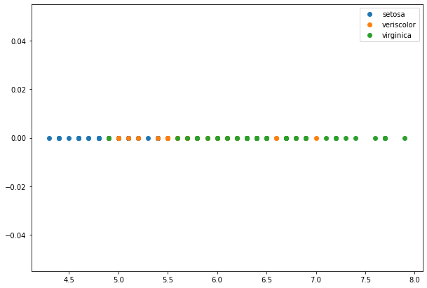
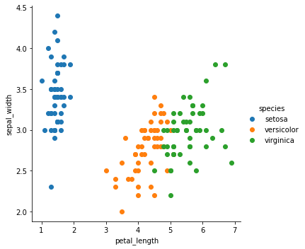
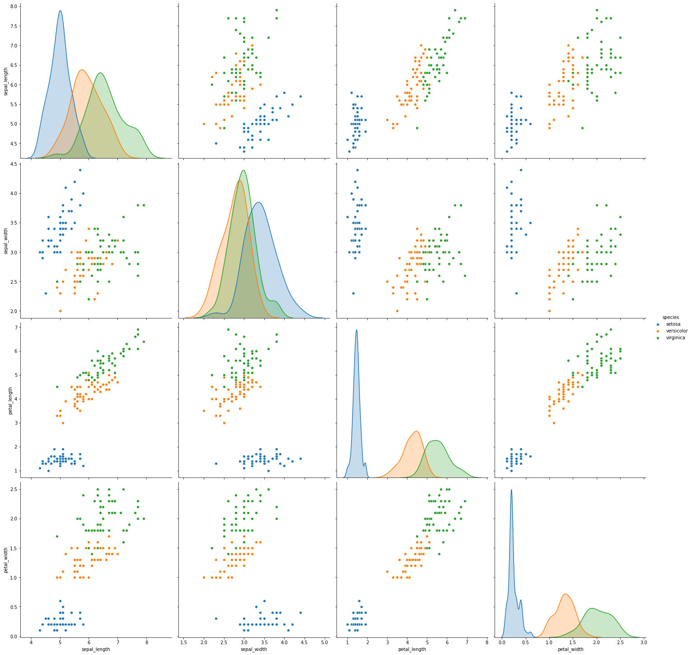
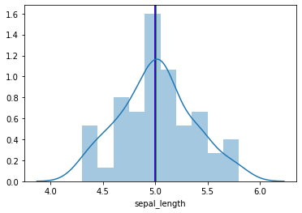

Iris Data Exploratory Analysis¶
[22]:
import numpy as np
import pandas as pd
import matplotlib.pyplot as plt
import seaborn as sns
%matplotlib inline
[2]:
df=pd.read_csv('https://raw.githubusercontent.com/uiuc-cse/data-fa14/gh-pages/data/iris.csv')
[3]:
df.head()
[3]:
| sepal_length | sepal_width | petal_length | petal_width | species | |
|---|---|---|---|---|---|
| 0 | 5.1 | 3.5 | 1.4 | 0.2 | setosa |
| 1 | 4.9 | 3.0 | 1.4 | 0.2 | setosa |
| 2 | 4.7 | 3.2 | 1.3 | 0.2 | setosa |
| 3 | 4.6 | 3.1 | 1.5 | 0.2 | setosa |
| 4 | 5.0 | 3.6 | 1.4 | 0.2 | setosa |
[4]:
df.shape
[4]:
(150, 5)
[5]:
df.species.unique()
[5]:
array(['setosa', 'versicolor', 'virginica'], dtype=object)
Understanding univariate analysis¶
take one of the features
[7]:
df_setosa = df[df['species'] == "setosa"]
df_setosa.head()
[7]:
| sepal_length | sepal_width | petal_length | petal_width | species | |
|---|---|---|---|---|---|
| 0 | 5.1 | 3.5 | 1.4 | 0.2 | setosa |
| 1 | 4.9 | 3.0 | 1.4 | 0.2 | setosa |
| 2 | 4.7 | 3.2 | 1.3 | 0.2 | setosa |
| 3 | 4.6 | 3.1 | 1.5 | 0.2 | setosa |
| 4 | 5.0 | 3.6 | 1.4 | 0.2 | setosa |
[8]:
df_versicolor = df[df['species'] == "versicolor"]
df_versicolor.head()
[8]:
| sepal_length | sepal_width | petal_length | petal_width | species | |
|---|---|---|---|---|---|
| 50 | 7.0 | 3.2 | 4.7 | 1.4 | versicolor |
| 51 | 6.4 | 3.2 | 4.5 | 1.5 | versicolor |
| 52 | 6.9 | 3.1 | 4.9 | 1.5 | versicolor |
| 53 | 5.5 | 2.3 | 4.0 | 1.3 | versicolor |
| 54 | 6.5 | 2.8 | 4.6 | 1.5 | versicolor |
[10]:
df_virginica = df[df['species'] == "virginica"]
df_virginica.head()
[10]:
| sepal_length | sepal_width | petal_length | petal_width | species | |
|---|---|---|---|---|---|
| 100 | 6.3 | 3.3 | 6.0 | 2.5 | virginica |
| 101 | 5.8 | 2.7 | 5.1 | 1.9 | virginica |
| 102 | 7.1 | 3.0 | 5.9 | 2.1 | virginica |
| 103 | 6.3 | 2.9 | 5.6 | 1.8 | virginica |
| 104 | 6.5 | 3.0 | 5.8 | 2.2 | virginica |
[26]:
fig = plt.figure(figsize=(10,7))
ax = fig.add_subplot(1,1,1)
ax.plot(df_setosa['sepal_length'],np.zeros_like(df_setosa['sepal_length']),"o",label="setosa")
ax.plot(df_versicolor['sepal_length'],np.zeros_like(df_versicolor['sepal_length']),"o",label="veriscolor")
ax.plot(df_virginica['sepal_length'],np.zeros_like(df_virginica['sepal_length']),"o",label="virginica")
ax.legend()
fig.show()
<ipython-input-26-80751068f4f1>:7: UserWarning: Matplotlib is currently using module://ipykernel.pylab.backend_inline, which is a non-GUI backend, so cannot show the figure.
fig.show()

Understanding bivariate analysis¶
take two features and plot graphs
[30]:
sns.FacetGrid(df,hue="species",size=5).map(plt.scatter,"petal_length","sepal_width").add_legend()
plt.show()

Understanding Multivariate analysis¶
[32]:
sns.pairplot(df,hue="species",size=5)
/home/nishant/anaconda3/lib/python3.8/site-packages/seaborn/axisgrid.py:2071: UserWarning: The `size` parameter has been renamed to `height`; please update your code.
warnings.warn(msg, UserWarning)
[32]:
<seaborn.axisgrid.PairGrid at 0x7fa672b3ae20>

observations
in scatter plots it is visible that setosa is having properties much different than other two and cluster can be created.
verginica and versicolor is showing some overlap on the data points but still two clusters can be maintained here.
[54]:
plt.axvline(df_setosa["sepal_length"].mean(),c="g")
plt.axvline(df_setosa["sepal_length"].median(),c="r")
plt.axvline(df_setosa["sepal_length"].mode()[0],c="b")
sns.distplot(df_setosa['sepal_length'],bins=10,kde=True)
[54]:
<AxesSubplot:xlabel='sepal_length'>
